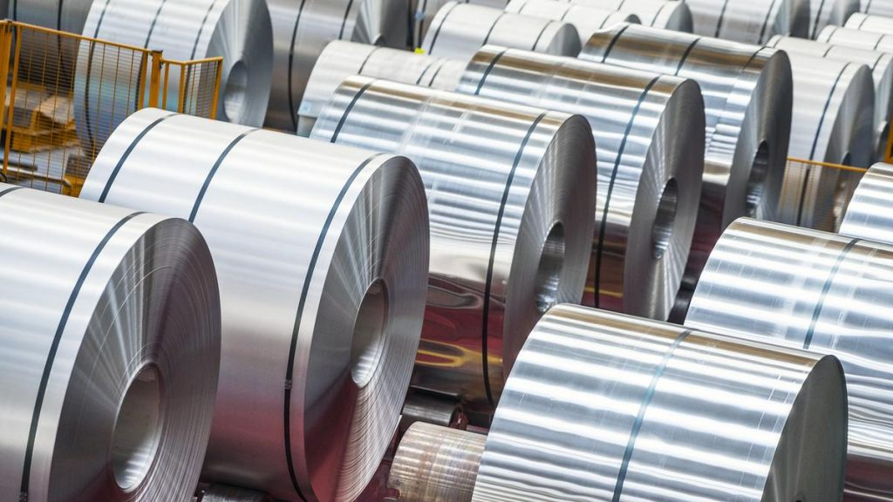
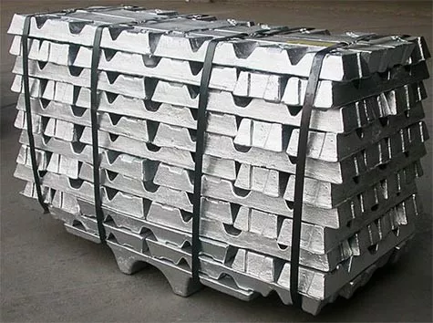
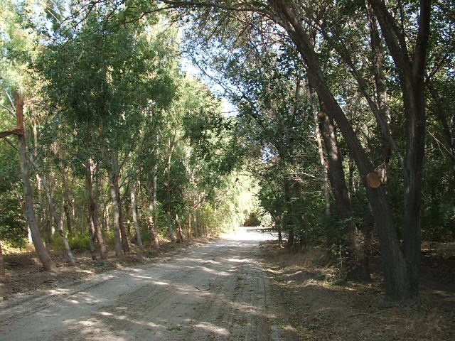
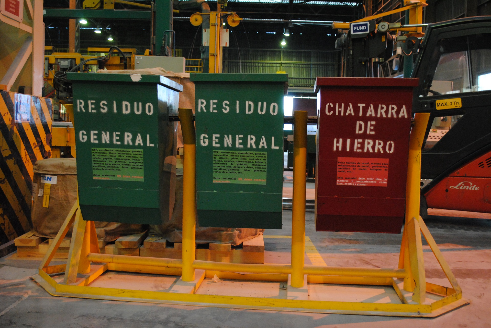

Quiénes somos
Aluar es una compañía de capitales nacionales gestionada de acuerdo a los más exigentes parámetros
internacionales de la industria y en permanente evolución. Desde sus inicios triplicó la capacidad de
producción de aluminio de 140.000tn gracias a un constante plan de inversiones, lo que le permite hoy
abastecer completamente el mercado local con aproximadamente el 30% de su volumen producido, exportando
el
otro 70% a países como Estados Unidos, Brasil, Japón y Alemania, entre otros.
En la División Primario se materializa la mayor parte de las operaciones de Aluar, con una capacidad de
producción de aluminio primario de 460.000tn anuales en su planta de Puerto Madryn. Allí se producen
placas,
lingotes, barrotes, alambrón y aleaciones de aluminio para abastecer a las más diversas industrias,
construcción, automotriz, packaging, líneas de transmisión de energía, entre otras.
La División Elaborados representa el siguiente eslabón en la cadena productiva, que posibilita que el
aluminio puro sea transformado en extruidos y en laminados que proveen a un gran número de industrias,
desde
las fachadas de edificios hasta los packagings de alimentos comestibles. Estos productos con alto valor
agregado son fabricados en la planta situada en la localidad de Abasto, provincia de Buenos Aires, que
cuenta con una capacidad de producción de 35.000 toneladas anuales.
A lo largo de sus 40 años de vida, Aluar mantuvo firme su visión e identidad histórica, expandiendo sus
actividades hasta lograr un elevado grado de integración vertical en la cadena de producción y
comercialización del aluminio, tanto aguas abajo con la producción de extruidos y laminados como aguas
arriba en la producción y transporte de energía eléctrica, mediante la adquisición de la concesión sobre
Hidroeléctrica Futaleufú – generadora de energía eléctrica - y con la participación en la transportadora
de
energía eléctrica en alta tensión Transpa S.A.
La Empresa continuó diversificando sus actividades productivas y comerciales y en el año 2002 adquirió
INFA
S.A. una empresa especializada en la ejecución de soluciones integrales para proyectos de ingeniería,
fabricación, construcción, montajes y servicios industriales.
Productos
- 
Alambron
El alambrón de Aluminio se produce en un sistema de colada y laminación continua de alambrón. Este producto tiene una alta demanda en la industria de los conductores eléctricos y cables, y para su uso en líneas de transmisión y distribución de electricidad, debido a sus buenas propiedades de conductividad eléctrica, resistencia mecánica y el peso reducido comparado con el cobre.
-

Barrotes
Los barrotes de Aluar se producen por colada semicontínua vertical (Wagstaff Air Slip). El 100% de los barrotes son inspeccionados por ultrasonido para la detección de fisuras e inclusiones. Los barrotes de serie 6xxx son homogeneizados. Este producto se obtiene exclusivamente a partir de Aluminio primario. Aluar provee una variedad de aleaciones estándar (principalmente series 6000 y 1000) utilizadas en la construcción, el transporte y la industria electrónica. Este producto responde a las normas internacionales ISO, EN y otras.
-

Lingotes
Los lingotes de Aluminio puro para refusión de Aluar son producidos exclusivamente a partir de Aluminio primario (bajo contenido de impurezas), utilizando parámetros de proceso controlados para alcanzar una calidad óptima y una mínima pérdida de metal en el proceso de refusión posterior. Aluar ofrece este producto en formatos de lingote de molde abierto y lingotes producidos por colada contínua horizontal ( Lingote T). Este producto se utiliza en la fabricación de menaje, envases, transporte, construcción, entre otras aplicaciones.
-

Placas para laminación
Las placas para deformación plástica por laminación se producen por colada semi-contínua vertical en una variedad de aleaciones y dimensiones, utilizando exclusivamente Aluminio primario. Este producto es utilizado en la producción de laminados principalmente en la industria de la construcción, automotriz, menaje y embalaje.
Medio Ambiente
Gestión de Emisiones de gases de efecto invernadero

A fin de contribuir con las obligaciones de la Argentina respecto de la reducción de gases con potencial efecto invernadero (Acuerdo de París (dic2015) aprobado por Ley 27270), en Aluar realizamos la siguientes acciones, con el fin de contribuir con los esfuerzos globales y nacionales orientados a minimizar los efectos del cambio climático:
- Producimos el aluminio líquido con tecnología Pre-baked en la electrólisis, con celdas electrolíticas cerradas que maximiza el aprovechamiento de la energía.
- Controlamos la ocurrencia de “efecto anódico” en las cubas de electrólisis, a través de un sistema de monitoreo automático que reduce activamente la ocurrencia de dicho fenómeno, evitando la producción de CF4 (tetrafluoruro de carbono).
- Priorizamos la generación de energía a través de ciclos combinados, re-utilizando los gases de combustión que emiten las turbinas de gas para alimentar turbinas de vapor. En consecuencia se evita parte de la emisión de CO2 libre a la atmósfera.
Monitoreo de la calidad del aire en la ciudad
A fin de verificar la eficacia de los dispositivos e instalaciones de captación y tratamiento de los efluentes gaseosos, operamos una red de monitoreo de la calidad del aire, orientada a evaluar el impacto de las emisiones de fluoruros en distintos puntos del ejido municipal.
Tratamiento de residuos sólidos y efluentes
Los residuos sólidos, previa clasificación, se reciclan durante el proceso (ánodos, baño electroquímico), se reutilizan (maderas, cartones, papel, plásticos, metales) o se disponen en un relleno de seguridad (materiales peligrosos), según corresponda. El correcto funcionamiento de los rellenos de seguridad se controla a través de una red de perforaciones ubicada estratégicamente, que permite monitorear la calidad del agua subterránea. El tratamiento de los efluentes gaseosos se realiza utilizando procedimientos secos. Se utilizan materiales sólidos granulados para retener las sustancias peligrosas (fluoruro de hidrógeno e hidrocarburos aromáticos) que contienen los efluentes gaseosos de los distintos procesos que requiere la producción de aluminio. La particularidad de esta industria es que los sólidos granulados empleados en el tratamiento de efluentes gaseosos son la alúmina y el coque de petróleo. Ambas son materias primas principales para la producción de aluminio y el fluoruro de hidrógeno y los hidrocarburos, se aprovechan en los procesos productivos a los que reingresan. Es decir, el tratamiento de gases protege el ambiente y es eficiente desde el punto de vista económico dado que minimiza los requerimientos de insumos que de otra forma deberían agregarse externamente.